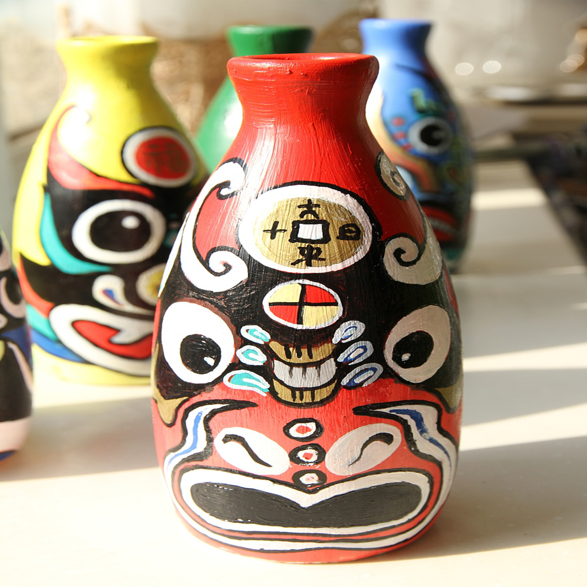
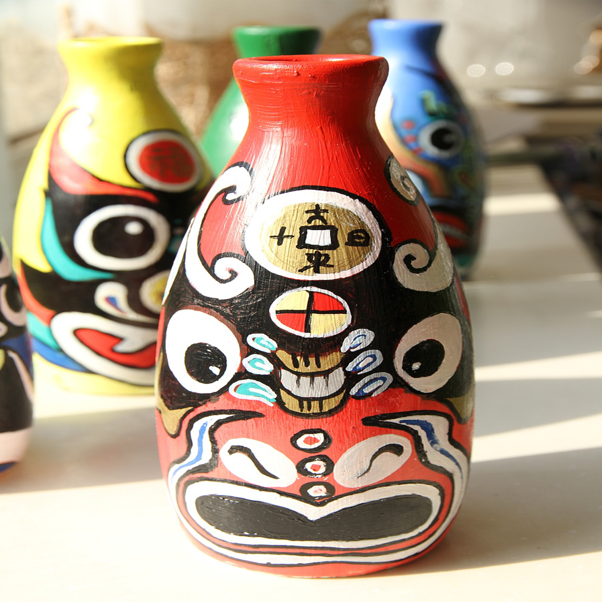

Burn it!
China
The Great Blessing of the People
and the Great Power of the Country

The Great Blessing of the People
and the Great Power of the Country

Salient features
（1）From generation to generation
（2）Ethnic flavor
（3）Have a long history
（4）Broad and profound

 Inheritance and Promotion
Inheritance and Promotion

Chinese civilization is the only continuous civilization in the history of world civilization. The continuous development of 5000-year civilization is an important feature of Chinese civilization. Inheritance and inheritance consciously is an important feature of ancient Chinese culture, and is also the fundamental condition for the continuous development of Chinese culture. Confucius pays attention to "narration but not writing". Narration is not only retelling, but also inheriting. Narration is the main way of accumulation and development of early ancient culture.
Excavation and elucidation
 

Coordination and adaptation
General Secretary Xi Jinping proposed that the most basic cultural genes of the Chinese nation should be adapted to contemporary culture. In harmony with modern society. This means that the practice of cultural practice must be combined with the needs of today's real life.
Creative transformation and innovative development